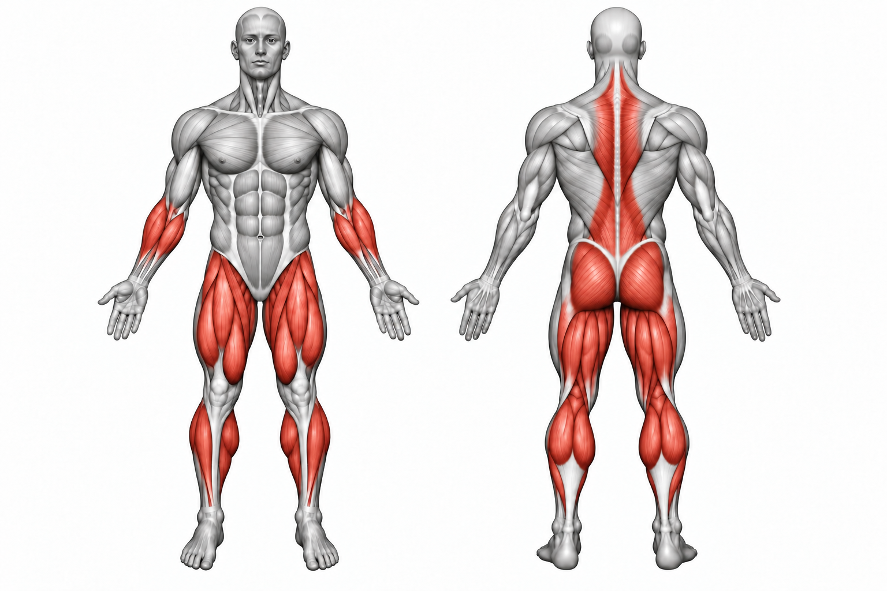
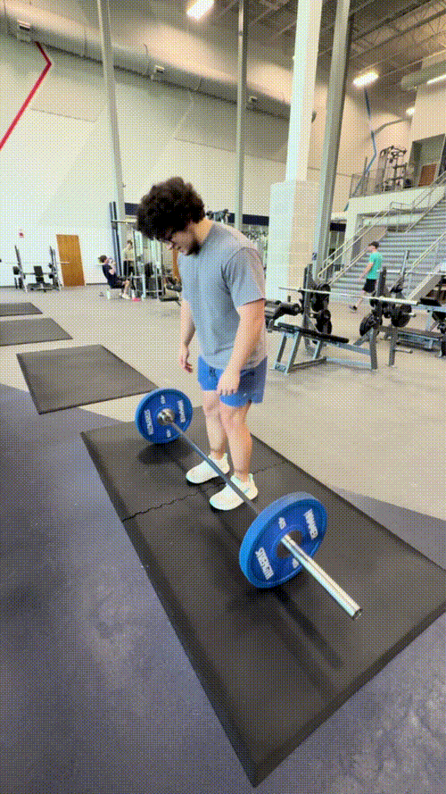

Deadlift


How to Perform
Stand with your feet about hip-width apart and the barbell over the middle of your feet. Hinge at your hips and bend your knees until you can grip the bar while keeping your back neutral.
Brace your core and drive through the floor as you extend your knees and hips. Keep the bar close to your body as you stand tall, then hinge at the hips and bend your knees to lower the bar under control.
Primary Muscles
Erector spinae (Lower Back)
Secondary Muscles
Gluteus maximus (Glutes), hamstrings (Hamstrings), trapezius (Traps), and latissimus dorsi (Lats)